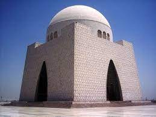
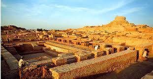
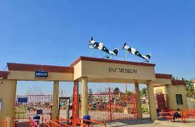
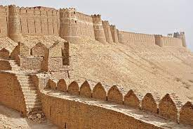
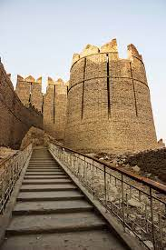

Sindh historically romanized as Sind) is one of the four provinces of Pakistan. Located in the southeastern region of the country, Sindh is the third-largest province of Pakistan by land area and the second-largest province by population after Punjab. It shares land borders with the Pakistani provinces of Balochistan to the east and north-east and Punjab to the north.
Places to Visit in Sindh:Mazar-e-Quaid is the resting place of Muhammad Ali Jinnah situated in Karachi, Sindh. The marble monument comprises a surface area of 3,100 square metres (33,000 square feet). It is surrounded by formal gardens and designed in an Islamic modernist style
Mohenjodaro or Moenjodaro, group of mounds and ruins on the right bank of the Indus River, northern Sindh province, southern Pakistan. It lies on the flat alluvial plain of the Indus, about 50 miles (80 km) southwest of Sukkur. The site contains the remnants of one of two main centres of the ancient Indus civilization (c. 2500–1700 BCE), the other one being Harappa, some 400 miles (640 km) to the northwest in Pakistan’s Punjab province.
PAF Museum, Karachi is an Air Force museum and park situated near Karsaz Interchange on Shahra-e-Faisal in Karachi, Sindh, Pakistan. numerous Aircrafts have been displayed in vast lush green parks, the main museum is located inside and features all major fighter aircraft that have been used by the Pakistan Air Force.
The Kot Diji Fort formally known as Fort Ahmadabad, is an 18th-century Talpur-era fort located in the town of Kot Diji in Khairpur District, Pakistan, about 25 miles east of the Indus River at the edge of the Thar Desert. The fort sits above a pre-Harappan Civilization archaeological site dating to 2500 to 2800 B.C.E.
 